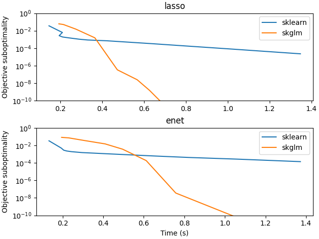

Note
Go to the end to download the full example code
Timing comparison with scikit-learn for Lasso#
Compare time to solve large scale Lasso problems with scikit-learn.
file_sizes: 0%| | 0.00/26.8M [00:00<?, ?B/s]
file_sizes: 0%| | 24.6k/26.8M [00:00<04:15, 105kB/s]
file_sizes: 0%| | 49.2k/26.8M [00:00<04:17, 104kB/s]
file_sizes: 0%| | 73.7k/26.8M [00:00<04:17, 104kB/s]
file_sizes: 1%|▏ | 197k/26.8M [00:01<02:18, 192kB/s]
file_sizes: 1%|▎ | 295k/26.8M [00:01<01:43, 257kB/s]
file_sizes: 1%|▎ | 328k/26.8M [00:01<01:58, 223kB/s]
file_sizes: 1%|▍ | 377k/26.8M [00:01<02:00, 218kB/s]
file_sizes: 2%|▌ | 492k/26.8M [00:02<01:28, 297kB/s]
file_sizes: 2%|▌ | 524k/26.8M [00:02<01:44, 250kB/s]
file_sizes: 2%|▋ | 639k/26.8M [00:02<01:21, 320kB/s]
file_sizes: 3%|▋ | 672k/26.8M [00:02<01:38, 266kB/s]
file_sizes: 3%|▊ | 786k/26.8M [00:03<01:18, 331kB/s]
file_sizes: 3%|▊ | 836k/26.8M [00:03<01:27, 295kB/s]
file_sizes: 3%|▉ | 934k/26.8M [00:03<01:18, 331kB/s]
file_sizes: 4%|█ | 983k/26.8M [00:03<01:27, 294kB/s]
file_sizes: 4%|█ | 1.02M/26.8M [00:04<01:43, 248kB/s]
file_sizes: 4%|█▏ | 1.13M/26.8M [00:04<01:20, 319kB/s]
file_sizes: 4%|█▏ | 1.16M/26.8M [00:04<01:36, 266kB/s]
file_sizes: 5%|█▎ | 1.28M/26.8M [00:04<01:17, 331kB/s]
file_sizes: 5%|█▎ | 1.33M/26.8M [00:04<01:26, 295kB/s]
file_sizes: 5%|█▍ | 1.43M/26.8M [00:05<01:16, 331kB/s]
file_sizes: 6%|█▍ | 1.47M/26.8M [00:05<01:25, 294kB/s]
file_sizes: 6%|█▌ | 1.57M/26.8M [00:05<01:16, 330kB/s]
file_sizes: 6%|█▋ | 1.62M/26.8M [00:05<01:25, 294kB/s]
file_sizes: 6%|█▋ | 1.72M/26.8M [00:06<01:15, 330kB/s]
file_sizes: 7%|█▊ | 1.79M/26.8M [00:06<01:19, 314kB/s]
file_sizes: 7%|█▉ | 1.87M/26.8M [00:06<01:16, 324kB/s]
file_sizes: 7%|█▉ | 1.92M/26.8M [00:06<01:25, 289kB/s]
file_sizes: 8%|██ | 2.03M/26.8M [00:07<01:11, 348kB/s]
file_sizes: 8%|██ | 2.10M/26.8M [00:07<01:15, 327kB/s]
file_sizes: 8%|██▏ | 2.18M/26.8M [00:07<01:03, 386kB/s]
file_sizes: 8%|██▏ | 2.23M/26.8M [00:07<01:01, 398kB/s]
file_sizes: 9%|██▎ | 2.29M/26.8M [00:07<01:09, 354kB/s]
file_sizes: 9%|██▍ | 2.38M/26.8M [00:07<00:58, 417kB/s]
file_sizes: 9%|██▍ | 2.42M/26.8M [00:08<01:01, 393kB/s]
file_sizes: 9%|██▌ | 2.51M/26.8M [00:08<01:00, 403kB/s]
file_sizes: 10%|██▌ | 2.59M/26.8M [00:08<00:52, 459kB/s]
file_sizes: 10%|██▋ | 2.64M/26.8M [00:08<00:52, 458kB/s]
file_sizes: 10%|██▊ | 2.74M/26.8M [00:08<00:54, 441kB/s]
file_sizes: 11%|██▉ | 2.88M/26.8M [00:08<00:46, 509kB/s]
file_sizes: 11%|███ | 3.01M/26.8M [00:09<00:45, 525kB/s]
file_sizes: 12%|███▏ | 3.15M/26.8M [00:09<00:44, 535kB/s]
file_sizes: 12%|███▎ | 3.34M/26.8M [00:09<00:39, 596kB/s]
file_sizes: 13%|███▌ | 3.57M/26.8M [00:10<00:34, 671kB/s]
file_sizes: 14%|███▊ | 3.77M/26.8M [00:10<00:32, 718kB/s]
file_sizes: 15%|███▉ | 3.96M/26.8M [00:10<00:30, 752kB/s]
file_sizes: 16%|████▏ | 4.16M/26.8M [00:10<00:29, 775kB/s]
file_sizes: 16%|████▎ | 4.26M/26.8M [00:10<00:33, 666kB/s]
file_sizes: 17%|████▋ | 4.59M/26.8M [00:11<00:25, 880kB/s]
file_sizes: 17%|████▋ | 4.69M/26.8M [00:11<00:26, 834kB/s]
file_sizes: 18%|████▊ | 4.82M/26.8M [00:11<00:29, 744kB/s]
file_sizes: 19%|█████ | 5.05M/26.8M [00:11<00:26, 815kB/s]
file_sizes: 19%|█████▎ | 5.21M/26.8M [00:12<00:27, 778kB/s]
file_sizes: 20%|█████▍ | 5.44M/26.8M [00:12<00:25, 837kB/s]
file_sizes: 21%|█████▋ | 5.60M/26.8M [00:12<00:23, 919kB/s]
file_sizes: 21%|█████▋ | 5.70M/26.8M [00:12<00:22, 918kB/s]
file_sizes: 22%|█████▉ | 5.83M/26.8M [00:12<00:26, 785kB/s]
file_sizes: 23%|██████ | 6.06M/26.8M [00:12<00:24, 850kB/s]
file_sizes: 23%|██████▎ | 6.29M/26.8M [00:13<00:23, 890kB/s]
file_sizes: 24%|██████▌ | 6.52M/26.8M [00:13<00:22, 916kB/s]
file_sizes: 25%|██████▊ | 6.75M/26.8M [00:13<00:21, 933kB/s]
file_sizes: 26%|███████ | 6.98M/26.8M [00:13<00:20, 945kB/s]
file_sizes: 27%|███████▎ | 7.21M/26.8M [00:14<00:20, 953kB/s]
file_sizes: 28%|███████▏ | 7.44M/26.8M [00:14<00:18, 1.04MB/s]
file_sizes: 29%|███████▍ | 7.63M/26.8M [00:14<00:17, 1.11MB/s]
file_sizes: 29%|███████▌ | 7.80M/26.8M [00:14<00:18, 1.04MB/s]
file_sizes: 30%|███████▉ | 7.93M/26.8M [00:14<00:20, 924kB/s]
file_sizes: 30%|███████▉ | 8.16M/26.8M [00:15<00:18, 1.03MB/s]
file_sizes: 31%|████████▍ | 8.32M/26.8M [00:15<00:22, 835kB/s]
file_sizes: 33%|████████▊ | 8.72M/26.8M [00:15<00:18, 986kB/s]
file_sizes: 33%|████████▉ | 8.85M/26.8M [00:15<00:19, 915kB/s]
file_sizes: 33%|█████████ | 8.95M/26.8M [00:16<00:22, 802kB/s]
file_sizes: 34%|█████████▏ | 9.11M/26.8M [00:16<00:19, 894kB/s]
file_sizes: 34%|█████████▎ | 9.21M/26.8M [00:16<00:19, 898kB/s]
file_sizes: 35%|█████████▍ | 9.34M/26.8M [00:16<00:22, 771kB/s]
file_sizes: 36%|█████████▋ | 9.57M/26.8M [00:16<00:20, 841kB/s]
file_sizes: 36%|█████████▊ | 9.73M/26.8M [00:16<00:19, 866kB/s]
file_sizes: 37%|██████████ | 9.93M/26.8M [00:17<00:17, 984kB/s]
file_sizes: 38%|██████████▏ | 10.1M/26.8M [00:17<00:17, 949kB/s]
file_sizes: 38%|██████████▎ | 10.2M/26.8M [00:17<00:19, 856kB/s]
file_sizes: 39%|██████████▍ | 10.4M/26.8M [00:17<00:17, 948kB/s]
file_sizes: 39%|██████████▏ | 10.6M/26.8M [00:17<00:16, 1.00MB/s]
file_sizes: 40%|██████████▊ | 10.7M/26.8M [00:17<00:18, 883kB/s]
file_sizes: 41%|██████████▉ | 10.8M/26.8M [00:18<00:16, 972kB/s]
file_sizes: 41%|██████████▋ | 11.0M/26.8M [00:18<00:15, 1.02MB/s]
file_sizes: 42%|███████████▏ | 11.1M/26.8M [00:18<00:17, 892kB/s]
file_sizes: 42%|███████████▍ | 11.3M/26.8M [00:18<00:15, 981kB/s]
file_sizes: 43%|███████████▏ | 11.5M/26.8M [00:18<00:14, 1.03MB/s]
file_sizes: 43%|███████████▋ | 11.6M/26.8M [00:18<00:16, 895kB/s]
file_sizes: 44%|███████████▉ | 11.8M/26.8M [00:19<00:15, 944kB/s]
file_sizes: 45%|███████████▋ | 12.0M/26.8M [00:19<00:14, 1.05MB/s]
file_sizes: 46%|███████████▊ | 12.2M/26.8M [00:19<00:13, 1.08MB/s]
file_sizes: 46%|████████████▍ | 12.3M/26.8M [00:19<00:15, 933kB/s]
file_sizes: 47%|████████████▋ | 12.6M/26.8M [00:19<00:14, 967kB/s]
file_sizes: 48%|████████████▍ | 12.7M/26.8M [00:19<00:13, 1.07MB/s]
file_sizes: 48%|████████████▌ | 12.9M/26.8M [00:20<00:12, 1.09MB/s]
file_sizes: 49%|█████████████▏ | 13.0M/26.8M [00:20<00:14, 942kB/s]
file_sizes: 50%|█████████████▍ | 13.3M/26.8M [00:20<00:13, 973kB/s]
file_sizes: 50%|█████████████ | 13.5M/26.8M [00:20<00:12, 1.08MB/s]
file_sizes: 51%|█████████████▏ | 13.6M/26.8M [00:20<00:12, 1.09MB/s]
file_sizes: 51%|█████████████▉ | 13.8M/26.8M [00:21<00:13, 943kB/s]
file_sizes: 52%|██████████████ | 14.0M/26.8M [00:21<00:13, 973kB/s]
file_sizes: 53%|██████████████▎ | 14.2M/26.8M [00:21<00:16, 765kB/s]
file_sizes: 55%|██████████████▊ | 14.6M/26.8M [00:21<00:12, 972kB/s]
file_sizes: 55%|██████████████▉ | 14.8M/26.8M [00:22<00:12, 925kB/s]
file_sizes: 56%|███████████████ | 14.9M/26.8M [00:22<00:12, 917kB/s]
file_sizes: 56%|███████████████▏ | 15.0M/26.8M [00:22<00:12, 904kB/s]
file_sizes: 57%|███████████████▎ | 15.2M/26.8M [00:22<00:14, 813kB/s]
file_sizes: 57%|███████████████▍ | 15.3M/26.8M [00:22<00:12, 889kB/s]
file_sizes: 58%|███████████████▌ | 15.4M/26.8M [00:22<00:12, 882kB/s]
file_sizes: 58%|███████████████▊ | 15.6M/26.8M [00:23<00:12, 867kB/s]
file_sizes: 59%|███████████████▉ | 15.8M/26.8M [00:23<00:12, 887kB/s]
file_sizes: 59%|████████████████ | 15.9M/26.8M [00:23<00:11, 962kB/s]
file_sizes: 60%|████████████████▏ | 16.1M/26.8M [00:23<00:12, 865kB/s]
file_sizes: 61%|████████████████▍ | 16.3M/26.8M [00:23<00:11, 902kB/s]
file_sizes: 62%|████████████████▋ | 16.5M/26.8M [00:24<00:11, 927kB/s]
file_sizes: 63%|████████████████▉ | 16.7M/26.8M [00:24<00:10, 943kB/s]
file_sizes: 63%|█████████████████ | 17.0M/26.8M [00:24<00:10, 951kB/s]
file_sizes: 64%|█████████████████▎ | 17.2M/26.8M [00:24<00:10, 957kB/s]
file_sizes: 65%|█████████████████▌ | 17.4M/26.8M [00:25<00:09, 982kB/s]
file_sizes: 66%|█████████████████ | 17.6M/26.8M [00:25<00:09, 1.02MB/s]
file_sizes: 66%|█████████████████▊ | 17.7M/26.8M [00:25<00:09, 994kB/s]
file_sizes: 67%|██████████████████ | 17.9M/26.8M [00:25<00:08, 987kB/s]
file_sizes: 68%|██████████████████▎ | 18.2M/26.8M [00:25<00:08, 982kB/s]
file_sizes: 69%|██████████████████▌ | 18.4M/26.8M [00:25<00:08, 999kB/s]
file_sizes: 69%|█████████████████▉ | 18.5M/26.8M [00:26<00:07, 1.04MB/s]
file_sizes: 70%|██████████████████ | 18.6M/26.8M [00:26<00:08, 1.00MB/s]
file_sizes: 70%|███████████████████ | 18.9M/26.8M [00:26<00:07, 993kB/s]
file_sizes: 71%|██████████████████▌ | 19.1M/26.8M [00:26<00:07, 1.01MB/s]
file_sizes: 72%|██████████████████▋ | 19.2M/26.8M [00:26<00:07, 1.05MB/s]
file_sizes: 72%|██████████████████▊ | 19.4M/26.8M [00:26<00:07, 1.01MB/s]
file_sizes: 73%|███████████████████▊ | 19.6M/26.8M [00:27<00:07, 995kB/s]
file_sizes: 74%|███████████████████▏ | 19.8M/26.8M [00:27<00:06, 1.01MB/s]
file_sizes: 75%|███████████████████▍ | 20.0M/26.8M [00:27<00:06, 1.05MB/s]
file_sizes: 75%|███████████████████▌ | 20.1M/26.8M [00:27<00:06, 1.01MB/s]
file_sizes: 76%|████████████████████▍ | 20.3M/26.8M [00:27<00:06, 996kB/s]
file_sizes: 77%|███████████████████▉ | 20.5M/26.8M [00:28<00:06, 1.01MB/s]
file_sizes: 77%|████████████████████ | 20.7M/26.8M [00:28<00:05, 1.06MB/s]
file_sizes: 78%|████████████████████▏ | 20.8M/26.8M [00:28<00:05, 1.01MB/s]
file_sizes: 79%|████████████████████▍ | 21.0M/26.8M [00:28<00:05, 1.02MB/s]
file_sizes: 79%|████████████████████▌ | 21.2M/26.8M [00:28<00:05, 1.07MB/s]
file_sizes: 80%|████████████████████▋ | 21.3M/26.8M [00:28<00:05, 1.02MB/s]
file_sizes: 80%|████████████████████▉ | 21.5M/26.8M [00:29<00:05, 1.03MB/s]
file_sizes: 81%|█████████████████████ | 21.7M/26.8M [00:29<00:04, 1.07MB/s]
file_sizes: 81%|█████████████████████▏ | 21.8M/26.8M [00:29<00:04, 1.02MB/s]
file_sizes: 82%|█████████████████████▍ | 22.0M/26.8M [00:29<00:04, 1.03MB/s]
file_sizes: 83%|█████████████████████▌ | 22.2M/26.8M [00:29<00:03, 1.18MB/s]
file_sizes: 83%|█████████████████████▋ | 22.3M/26.8M [00:29<00:03, 1.11MB/s]
file_sizes: 84%|█████████████████████▉ | 22.5M/26.8M [00:29<00:04, 1.03MB/s]
file_sizes: 85%|██████████████████████ | 22.7M/26.8M [00:30<00:03, 1.08MB/s]
file_sizes: 85%|██████████████████████▏ | 22.8M/26.8M [00:30<00:03, 1.02MB/s]
file_sizes: 86%|██████████████████████▎ | 23.0M/26.8M [00:30<00:03, 1.22MB/s]
file_sizes: 87%|██████████████████████▌ | 23.2M/26.8M [00:30<00:03, 1.18MB/s]
file_sizes: 87%|██████████████████████▋ | 23.3M/26.8M [00:30<00:03, 1.03MB/s]
file_sizes: 88%|██████████████████████▊ | 23.5M/26.8M [00:30<00:02, 1.21MB/s]
file_sizes: 88%|██████████████████████▉ | 23.7M/26.8M [00:30<00:02, 1.12MB/s]
file_sizes: 89%|███████████████████████▏ | 23.9M/26.8M [00:31<00:02, 1.30MB/s]
file_sizes: 90%|███████████████████████▎ | 24.1M/26.8M [00:31<00:02, 1.13MB/s]
file_sizes: 91%|███████████████████████▌ | 24.2M/26.8M [00:31<00:02, 1.19MB/s]
file_sizes: 91%|███████████████████████▊ | 24.5M/26.8M [00:31<00:01, 1.34MB/s]
file_sizes: 92%|███████████████████████▉ | 24.6M/26.8M [00:31<00:01, 1.26MB/s]
file_sizes: 93%|████████████████████████ | 24.8M/26.8M [00:31<00:01, 1.18MB/s]
file_sizes: 94%|████████████████████████▍ | 25.2M/26.8M [00:32<00:01, 1.31MB/s]
file_sizes: 95%|████████████████████████▊ | 25.5M/26.8M [00:32<00:00, 1.34MB/s]
file_sizes: 97%|█████████████████████████ | 25.9M/26.8M [00:32<00:00, 1.36MB/s]
file_sizes: 97%|█████████████████████████▎| 26.1M/26.8M [00:32<00:00, 1.05MB/s]
file_sizes: 99%|█████████████████████████▊| 26.6M/26.8M [00:33<00:00, 1.48MB/s]
file_sizes: 100%|██████████████████████████| 26.8M/26.8M [00:33<00:00, 1.37MB/s]
file_sizes: 100%|███████████████████████████| 26.8M/26.8M [00:33<00:00, 804kB/s]
import time
import warnings
import numpy as np
from numpy.linalg import norm
import matplotlib.pyplot as plt
from libsvmdata import fetch_libsvm
from sklearn.exceptions import ConvergenceWarning
from sklearn.linear_model import Lasso as Lasso_sklearn
from sklearn.linear_model import ElasticNet as Enet_sklearn
from skglm import Lasso, ElasticNet
warnings.filterwarnings('ignore', category=ConvergenceWarning)
def compute_obj(X, y, w, alpha, l1_ratio=1):
loss = norm(y - X @ w) ** 2 / (2 * len(y))
penalty = (alpha * l1_ratio * np.sum(np.abs(w))
+ 0.5 * alpha * (1 - l1_ratio) * norm(w) ** 2)
return loss + penalty
X, y = fetch_libsvm("news20.binary"
)
alpha = np.max(np.abs(X.T @ y)) / len(y) / 10
dict_sklearn = {}
dict_sklearn["lasso"] = Lasso_sklearn(
alpha=alpha, fit_intercept=False, tol=1e-12)
dict_sklearn["enet"] = Enet_sklearn(
alpha=alpha, fit_intercept=False, tol=1e-12, l1_ratio=0.5)
dict_ours = {}
dict_ours["lasso"] = Lasso(
alpha=alpha, fit_intercept=False, tol=1e-12)
dict_ours["enet"] = ElasticNet(
alpha=alpha, fit_intercept=False, tol=1e-12, l1_ratio=0.5)
models = ["lasso", "enet"]
fig, axarr = plt.subplots(2, 1, constrained_layout=True)
for ax, model, l1_ratio in zip(axarr, models, [1, 0.5]):
pobj_dict = {}
pobj_dict["sklearn"] = list()
pobj_dict["us"] = list()
time_dict = {}
time_dict["sklearn"] = list()
time_dict["us"] = list()
# Remove compilation time
dict_ours[model].max_iter = 10_000
w_star = dict_ours[model].fit(X, y).coef_
pobj_star = compute_obj(X, y, w_star, alpha, l1_ratio)
for n_iter_sklearn in np.unique(np.geomspace(1, 50, num=15).astype(int)):
dict_sklearn[model].max_iter = n_iter_sklearn
t_start = time.time()
w_sklearn = dict_sklearn[model].fit(X, y).coef_
time_dict["sklearn"].append(time.time() - t_start)
pobj_dict["sklearn"].append(compute_obj(X, y, w_sklearn, alpha, l1_ratio))
for n_iter_us in range(1, 10):
dict_ours[model].max_iter = n_iter_us
t_start = time.time()
w = dict_ours[model].fit(X, y).coef_
time_dict["us"].append(time.time() - t_start)
pobj_dict["us"].append(compute_obj(X, y, w, alpha, l1_ratio))
ax.semilogy(
time_dict["sklearn"], pobj_dict["sklearn"] - pobj_star, label='sklearn')
ax.semilogy(
time_dict["us"], pobj_dict["us"] - pobj_star, label='skglm')
ax.set_ylim((1e-10, 1))
ax.set_title(model)
ax.legend()
ax.set_ylabel("Objective suboptimality")
axarr[1].set_xlabel("Time (s)")
plt.show(block=False)
Total running time of the script: (1 minutes 21.675 seconds)